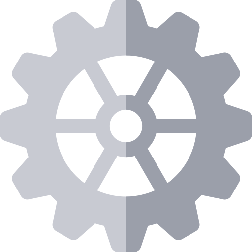
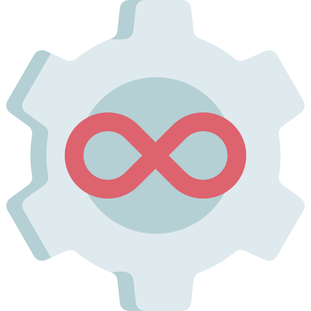

Hello.
I am passionate about using technology to help support other industries and businesses. Seeking career opportunities that can make an impact.
My Recent Experience
Kaiser Permanente Information Technology

API Chapter Development
- Tested code by writing Junit tests using Object Oriented Programming and Apache Camel concepts to improve code coverage and prepare for deployment
- Implemented an inner sourcing metrics dashboard prototype by writing a python script to gather data from Enterprise Github and tied it together with the open-source GrimoireLab inside a Docker container.
- Used Cognizant One DevOps Insights tool to create inner sourcing metrics panels by querying data from Neo4j

Site Reliability Engineering
- Constructed Python scripts to parse JSON and XML errors from Impala tables to record the state of KP.org applications
- Created error classifying tickets using Jira’s rest api in a Python script for team planning use

IT Consulting
- Communicated with internal and external customers to write Requirements Definition Documents and Application Solution Design Documents for projects
- Linked business requirements to functional requirements bridging the gap between customer requests and implementation done by engineers for various projects
- Produced diagrams within Visio including logical component diagrams, sequence diagrams, system diagrams to depict project components (internal and external systems) and ties between them

DevOps
- Led a GitLab proof of concept to determine its potential benefit to KP. This included both configuring linux servers for Gitlab and consulting with KP and GitLab engineers to determine an assessment of Gitlab
- Implemented a Chef cookbook to automate the installation and registration of GitLab runners and configured RHEL servers to suit GitLab requirements. Created a yml pipeline template file for maven projects and managed a non-prod IBM Bluemix environment for project deployment
- Wrote and configured groovy scripts to run through Jenkins that automated creation and deactivation of users in Crowd based on LDAP information by using the crowd rest api to update the user and Jira rest api to create/update tickets for tracking
University of California Davis - Applications Programmer II

- Expanded the internal website to include chemical inventory, chemical application tracking and automated creation of chemical application reports using JavaScript, SQL, ColdFusion and HTML/CSS - this in turn saved employees days of manual labor
- Managed plant research data through the administrative database in MS SQL Server
- Improved internal website search capabilities by adding photo tagging and document grouping functionality based on user requests
- Consulted with lab employees about the need for a reservation calendar feature to reserve fume hoods on the internal system and constructed a reservation calendar using JavaScript, HTML/CSS, SQL and ColdFusion